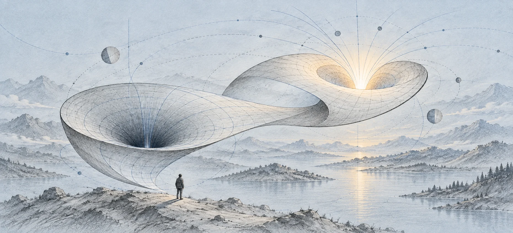
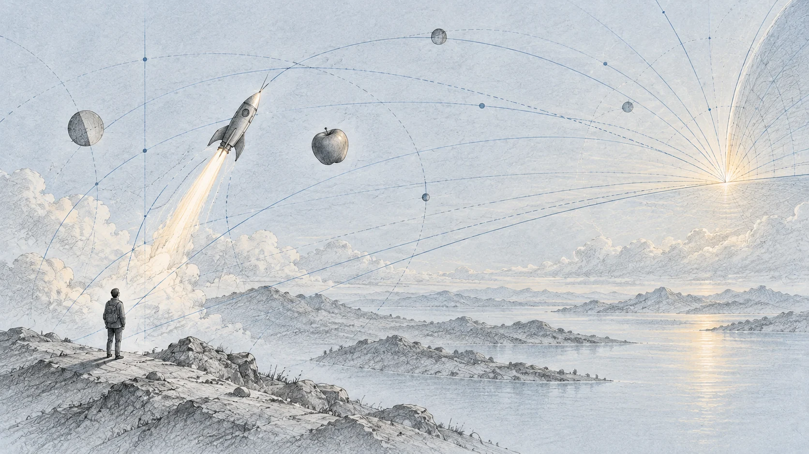

AI Summit PJAIT · 16 września 2026
Dziury koloru białego
Andrzej Dragan

Od przyspieszającej rakiety do białych dziur. Andrzej Dragan opowiada o wielkich odkryciach jako ciągu małych kroków — i pyta, co ta historia mówi o możliwościach sztucznej inteligencji.
Najważniejsze wątki
Jak daleko prowadzi jedna analogia?
Wykład zaczyna się od pytania o AI, prowadzi przez teorię względności i wraca do przyszłości nauki. Dragan pokazuje, jak połączenie kilku znanych obserwacji pozwala dojść do zaskakujących wniosków o grawitacji, horyzontach i białych dziurach.
Jego główna teza dotyczy inteligencji: dostrzeganie wzorców i analogii może być samym mechanizmem twórczości. Prelegent zastanawia się, czy do wielkich odkryć potrzeba czegoś więcej — i gdzie dalszy postęp będzie wymagał nowych eksperymentów.
- Dwie analogie prowadzą w opowieści Dragana od ruchu i przyspieszenia do opisu grawitacji przez geometrię.
- Przyspieszająca rakieta pomaga wyobrazić sobie horyzont: granicę możliwości przesyłania informacji.
- Białe dziury pojawiają się w rozważanym opisie matematycznym; ich istnienie i przyszłość zapadającej się materii pozostają otwartymi pytaniami.
- W fizyce znaczenie mają dane z eksperymentów. Dragan widzi dla AI rolę także w proponowaniu nowych doświadczeń.
Czy odkrycie wymaga geniuszu?
Dragan przywołuje pytanie: czy model wytrenowany na wiedzy dostępnej przed odkryciem szczególnej albo ogólnej teorii względności potrafiłby sam do niej dojść? Za tym testem kryje się przekonanie, że twórczość zawiera jakiś szczególny pierwiastek, którego maszynie musi brakować.
Prelegent kwestionuje takie założenie. Dla niego dostrzeganie wzorców, łączenie kropek i znajdowanie analogii należą do definicji inteligencji. Historię fizyki wykorzystuje, żeby przyjrzeć się temu mechanizmowi krok po kroku.
W transkrypcie · około 01:20 ↗ · Czytaj fragment skryptu ↗ · Obejrzyj ten fragment ↗
Grawitacja, winda i obracający się krąg
Pierwsza analogia łączy grawitację z przyspieszeniem. Winda ruszająca w górę wciska pasażera w podłogę; podobne odczucie może dawać rakieta. Dragan podkreśla uniwersalność tego efektu: przyspieszająca podłoga zbliża się do różnych swobodnych przedmiotów w ten sam sposób.
Drugi krok prowadzi do geometrii. Pomiar okręgu na obracającej się platformie, rozpatrywany z uwzględnieniem efektów szczególnej teorii względności, daje zaskakujący stosunek obwodu do średnicy. Dragan łączy tę obserwację z geometrią zakrzywionej przestrzeni Riemanna. Tak przedstawia drogę od opisu ruchu do ogólnej teorii względności.
W transkrypcie · około 03:30 ↗ · Czytaj fragment skryptu ↗ · Obejrzyj ten fragment ↗
Analogie między analogiami
Ten sposób myślenia Dragan odnosi do sieci neuronowych. Opisuje je jako kolejne poziomy rozpoznawania podobieństw: jedna warstwa wykrywa wzorce, następna odnajduje relacje między nimi. Powstaje hierarchia analogii.
Prelegent parafrazuje też przypisywaną Stefanowi Banachowi myśl o matematykach, którzy widzą podobieństwa między twierdzeniami, dowodami, teoriami i wreszcie samymi analogiami. To odwołanie nie stanowi potwierdzonego dosłownego cytatu Banacha. W tym zestawieniu zdolność maszyny do rozpoznawania wzorców staje się poważnym kandydatem na narzędzie odkrywania.
W transkrypcie · około 08:50 ↗ · Czytaj fragment skryptu ↗ · Obejrzyj ten fragment ↗
Rakieta i granica informacji
Żeby opowiedzieć o czarnych dziurach, Dragan wraca do przyspieszającej rakiety. Rysuje jej ruch na diagramie, którego osie oznaczają czas i przestrzeń. Światło wyznacza granicę tego, jak szybko może rozchodzić się informacja.
Dla stale przyspieszającego obserwatora pojawia się obszar zdarzeń, z którego sygnały nigdy do niego nie dotrą. Prelegent pokazuje tę granicę jako analogię horyzontu. Opowieść o spadającym jabłku ilustruje, jak kontakt może stać się jednostronny: obserwator nadal wysyła sygnały, ale odpowiedź z pewnego obszaru już go nie dosięgnie.
W transkrypcie · około 11:00 ↗ · Czytaj fragment skryptu ↗ · Obejrzyj ten fragment ↗

Skąd pojawia się biała dziura?
Dragan zwraca uwagę na drugą granicę w rozważanym diagramie. Ma ona odwrotny charakter: z jednej strony informacja może wydostawać się na zewnątrz, lecz nie można pokonać tej granicy w przeciwnym kierunku. Tu pojawia się opowieść o białej dziurze.
W omawianym przez niego idealizowanym rozwiązaniu dotyczącym odwiecznie istniejącej czarnej dziury czarny i biały region są ze sobą powiązane. Dragan przestrzega przed traktowaniem ich jako dwóch całkowicie niezależnych obiektów. Rozróżnia ten opis od pytania o rzeczywistą zapadającą się materię; wspomina hipotezę, według której mogłaby ona po bardzo długim czasie przejść w białą dziurę. Zaznacza, że nie wie, jak będzie naprawdę.
W transkrypcie · około 24:00 ↗ · Czytaj fragment skryptu ↗ · Obejrzyj ten fragment ↗
Jabłko i wielkie połączenia
Wracając do głównej myśli, Dragan opowiada o Newtonie: jabłko i ruch ciał niebieskich można połączyć jednym prawem. Zauważenie pokrewieństwa między zjawiskami pozwala nadać im wspólny opis.
Podobną wartość widzi w matematyce, gdy pozornie odległe działy okazują się ze sobą związane. Jako przykład podaje geometrię algebraiczną. Wielki krok nauki przedstawia jako odnalezienie mostu między rzeczami, które wcześniej oglądano osobno.
W transkrypcie · około 33:00 ↗ · Czytaj fragment skryptu ↗ · Obejrzyj ten fragment ↗
Fizyka potrzebuje nowych pytań do świata
Według Dragana eksperymenty często zmuszały ludzi do porzucenia wygodnego obrazu rzeczywistości. W ten sposób opowiada o narodzinach teorii względności i teorii kwantowej: trudne wyniki wymagały nowego opisu, a kolejne analogie pomagały go zrozumieć.
Tu dostrzega różnicę między postępem w matematyce a postępem w fizyce. Teoria fizyczna musi odpowiadać wynikom doświadczeń. Jego zdaniem brak nowych eksperymentów podważających obecny opis może ograniczać zarówno ludzi, jak i AI. Przyszłą rolę modeli widzi także w proponowaniu doświadczeń, które otworzą drogę do nowych teorii.
W transkrypcie · około 36:30 ↗ · Czytaj fragment skryptu ↗ · Obejrzyj ten fragment ↗
Nauczyć się swojej roli na nowo
W zakończeniu Dragan wraca do matematyków i zmiany wywołanej przez AI. Przewiduje, że będą jedną z pierwszych grup zmuszonych do ponownego określenia swojego miejsca. Nie podaje gotowego scenariusza ich przyszłości.
Pozostawia jednak myśl o możliwej pomocy dla innych: jeśli matematycy znajdą sposób na życie i pracę w tej sytuacji, ich doświadczenie może przydać się kolejnym ludziom. Pytanie o granice maszyn staje się pytaniem o to, jak odnaleźć się po zmianie własnej roli.
W transkrypcie · około 41:00 ↗ · Czytaj fragment skryptu ↗ · Obejrzyj ten fragment ↗
Cały wykład
Dostarczone nagranie trwa 42 minuty 22 sekundy i obejmuje zapowiedź oraz wykład. Transkrypt uzupełniono przez porównanie niezależnej automatycznej transkrypcji dźwięku pełnej konferencji z jej napisami. Zachowano lokalne znaczniki czasu i oznaczenia nierozstrzygniętych fragmentów; początek lokalnego nagrania odpowiada w przybliżeniu 07:47:55 pełnej konferencji. Komunikaty organizacyjne i pominięte dygresje oznaczono w zapisie. Odwołania do rysunków zachowują rozpoznane wypowiedzi, a parafraza przypisywana Banachowi nie jest gwarancją literalnego cytatu. Opinie, hipotezy i prognozy pozostają stanowiskiem prelegenta.
Streszczenie redakcyjne na podstawie nagrania. Opinie i przewidywania należą do prelegenta. Wykład „Dziury koloru białego”, Andrzej Dragan, 16 września 2026. Program konferencji. Ilustracja i prompt.